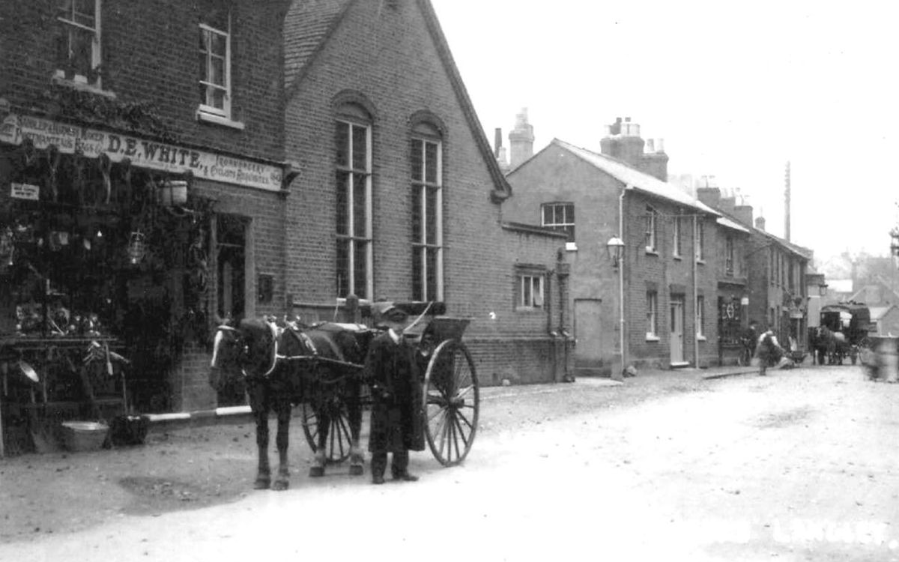
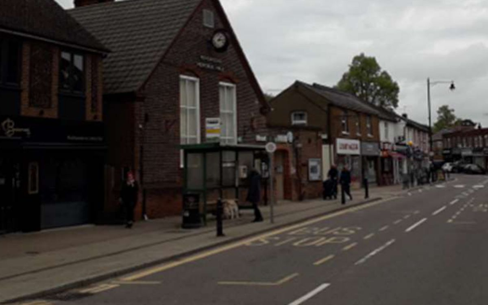

Every shop the street has known.
Butchers, bakers, undertakers, drapers and grocers. Drag across the photograph above to see Henderson Hall and the High Street then and now.
Henderson Hall (built 1902) and its neighbours. Photographs from the Abbots Langley Local History Society collection and Shady Firs Photography, as printed in the Society's directory.
The earliest trade in the Society's directory is the King's Head, recorded from 1756, and a butcher was working at no. 17 before 1800. Since then the same plots have carried butchers, bakers, ironmongers and undertakers through more than two centuries of village life. This site collects what survives of that record, one shopfront at a time.
Walk the street
Map data © OpenStreetMap contributors, ODbL. Markers show today's business at each address. Every other address is in the directory.